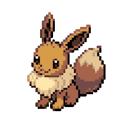

Au-delà des frontières du possible

Plonge-toi dans cette odyssée de plus d’un demi-siècle,
un divertissement devenus un immense secteur culturel dont le poids économique dépasse aujourd’hui celui du cinéma ou de la musique…
Un loisir qui se regarde autant qu’il se joue, à tous les âges, partout dans le monde…
Beau comme un film, épique comme un livre d’aventures, violent comme la guerre ou doux comme un poème...
Romanesque ou vibrant, il change de peau au gré des genres…
Il est technologique et artistique, vulgarisateur et social…
Comptant plus de 3 milliards d’adeptes sur la planète…
Le jeux vidéo
De Pong à Elden Ring, en passant par Minecraft et GTA, le jeux vidéos fait rêver petits et grands depuis des décennies, et ça ne compte pas s’arrêter !
Les genres
Les jeux vidéo sont classés en différents genres, chacun offrant une expérience unique en fonction des différents univers de jeu.
- Action
- Ces jeux se concentrent sur des mécaniques de combat et une histoire palpitante.
Devil May Cry, God of War, Dying Light, Legacy of Khain : Soul Reaver
- Aventure
- Les joueurs explorent des mondes interactifs, résolvent des énigmes et suivent une histoire narrative.
The Legend of Zelda, Uncharted, The Last of Us
- RPG – Role Playing Game (Jeux de rôle)
- Le joueur incarne un personnage, souvent dans un univers fantastique, et prend des décisions qui influencent l’histoire.
The Witcher 3, Final Fantasy, Skyrim, Fallout, Cyberpunk 2077
- Open World Games
- Ces univers offrent au joueur une complète/partielle liberté sur la map. Vous pouvez suivre des missions, des quêtes secondaires, créer des objets,
voire même créer des relations et faire vos propres choix (tenues, armes, moralité,…).
Red Dead Redemption 2, Ghost of Tsushima, Horizon Zero Dawn
- FPS – First Person Shooter (Jeux de tir à la première personne)
- L'action se déroule du point de vue du personnage, souvent avec des armes à feu.
Call of Duty, Overwatch, Doom
- Simulation
- Ces jeux imitent des activités réelles, comme la gestion de ressources, la conduite ou la simulation de vie.
The Sims, Farming Simulator
- Stratégie
- Le joueur doit planifier et gérer ses actions de manière tactique pour remporter la victoire.
Civilization, StarCraft, Forge of Empires
- Puzzle
- Ces jeux sont centrés sur la résolution d'énigmes, souvent avec des mécanismes qui demandent réflexion et logique.
Tetris, Portal
- Survival (Survie)
- L'objectif est de survivre dans un environnement hostile en gérant des ressources et en se protégeant des dangers.
Minecraft, The Forest, Ark
- MOBA – Multiplayer Online Battle Arena
- Ce genre de jeu oppose des équipes de joueurs dans des arènes où la stratégie et la coopération sont essentielles.
League of Legends, Dota 2
- Battle Royale
- Des centaines de joueurs s'affrontent sur une grande carte jusqu'à ce qu'il ne reste qu'un seul survivant, avec des zones de combat qui se rétrécissent au fil du temps.
Fortnite, Apex Legends
- Hack and Slash
- Ce genre met l’accent sur les combats rapides et intenses contre de nombreux ennemis en utilisant des armes ou des pouvoirs.
Diablo, Bayonetta
- Visual Novel
- Ce sont des jeux narratifs où les choix du joueur influencent l'histoire, souvent sous forme de roman interactif.
Doki Doki Literature Club!, Phoenix Wright: Ace Attorney
- Rythm Games (Jeux de rythme)
- Ces jeux demandent aux joueurs de suivre le rythme de la musique et de réaliser des actions en synchronisation.
Guitar Hero, Beat Saber
- Simulation sportive
- Ces jeux reproduisent des sports réels, permettant aux joueurs de jouer à des jeux comme le football, le basketball ou la course.
FIFA, NBA 2K
- Jeux de plateforme
- Ces jeux se concentrent sur le saut et l'exploration d'environnements en 2D ou 3D, souvent avec des obstacles à éviter.
Super Mario, Rayman, Sonic, Celeste
- Jeux d'horreur
- Ces jeux sont conçus pour effrayer le joueur, souvent avec une atmosphère tendue et des éléments surnaturels.
Resident Evil, Silent Hill, Until Dawn
Chaque genre peut avoir des sous-genres et des hybridations, rendant les classifications encore plus variées !